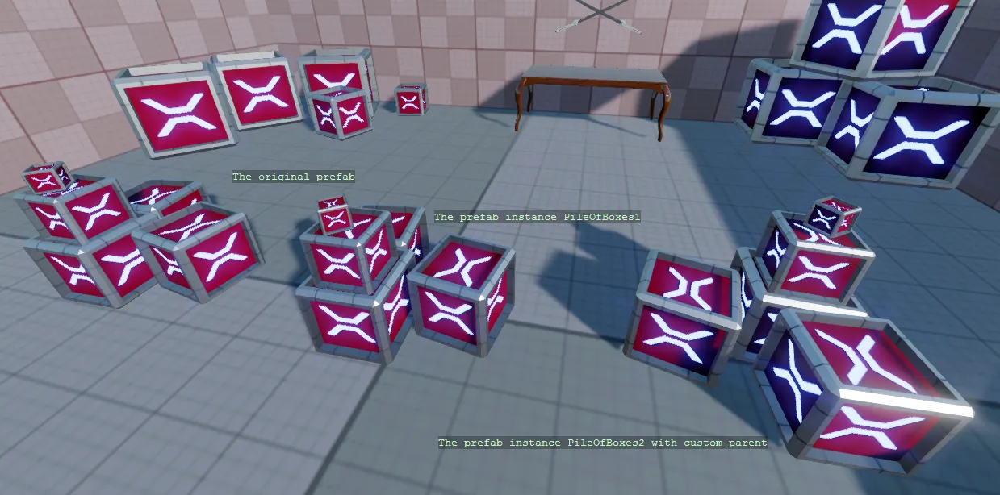

Instantiating Prefabs
You can find this sample in the tutorial project: Menu → Instantiating prefabs
Explanation
This C# Beginner tutorial covers how to instantiate prefabs.
A prefab is a "master" version of an object that you can reuse wherever you need. When you change the prefab, every instance of the prefab changes too.
A prefab that is instantiated by code does not give you a new prefab object, but instead gives you a list of entities. As long as these entities are not added to the scene, they wont be visible and attached scripts will not be executed.

Code
using Stride.Core.Mathematics;
using Stride.Engine;
namespace CSharpBeginner.Code
{
/// <summary>
/// This script demonstrates how we can instantiate prefabs
/// <para>
/// https://doc.stride3d.net/latest/en/tutorials/csharpbeginner/instantiating-prefabs.html
/// </para>
/// </summary>
public class InstantiatingPrefabsDemo : SyncScript
{
public Prefab PileOfBoxesPrefab;
public override void Start()
{
// A prefab can be instantiated. Is does not give you a new prefab, but instead gives you a list of entities
var pileOfBoxesInstance = PileOfBoxesPrefab.Instantiate();
// An instantiated prefab does nothing and isn't visible untill we add it to the scene
Entity.Scene.Entities.AddRange(pileOfBoxesInstance);
// We can also load a prefab by using the Content.Load method
var pileOfBoxesPrefabFromContent = Content.Load<Prefab>("Prefabs/Pile of boxes");
var pileOfBoxesInstance2 = pileOfBoxesPrefabFromContent.Instantiate();
// We add the entities to a new entity that we can use a parent
// We can easily position and rotate the parent entity
var pileOfBoxesParent = new Entity("PileOfBoxes2", new Vector3(0, 0, -2));
pileOfBoxesParent.Transform.Rotation = Quaternion.RotationY(135);
foreach (var entity in pileOfBoxesInstance2)
{
pileOfBoxesParent.AddChild(entity);
}
Entity.Scene.Entities.Add(pileOfBoxesParent);
}
public override void Update()
{
DebugText.Print("The original prefab", new Int2(310, 320));
DebugText.Print("The prefab instance PileOfBoxes", new Int2(560, 370));
DebugText.Print("The prefab instance PileOfBoxes2 with custom parent", new Int2(565, 650));
}
}
}